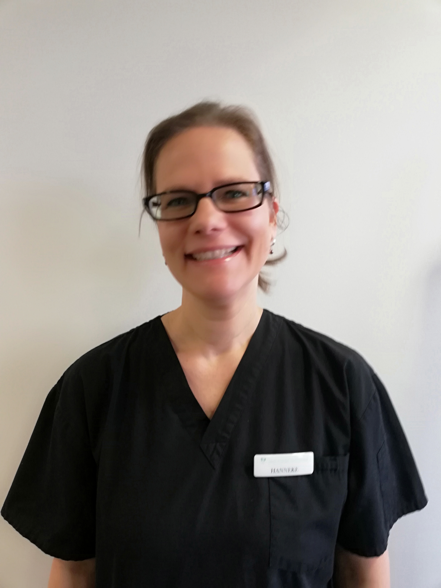

THE TEAM
Providing the highest level of periodontal care through excellence, compassion and education.
Periodontist
Morris Wong
Morris Wong was born and raised in Palmerston North, and graduated with a BSc from Massey
University in 1985. Following a post-graduate Diploma, he entered the School of Dentistry at
Otago University, where he completed a BDS in 1990. His first year working was as Dental House
Surgeon at Napier Hospital followed by locum dental positions in Private dental practice.
In 1992 Morris travelled to Hong Kong, primarily to study language and to experience the Chinese culture. What started as a 6-month visit eventuated into a 7 year stay, where Morris worked in a private medical clinic as well as completing his Masters in Periodontology. Towards the end of this period Morris headed a dental team as part of a 10-week medical project in the North West of China.
Morris returned to New Zealand in 2000 and gained his specialist registration as a Periodontist. The next 15 years were spent working in a group practice in Wellington specialising in Periodontics and Dental Implants, and building up the Lower Hutt practice. Currently Morris is working full time in Lower Hutt, and serves as visiting Periodontist to Hutt Hospital, where he works primarily with the combined Cleft Lip and Palate team.
Morris practices all aspects of periodontics and dental implants, and is a member of the New Zealand Dental Association, New Zealand Society of Periodontology, Australia New Zealand Academy of Periodontology, Royal Australasian College of Dental Surgeons, American Academy of Periodontology, and the International Team for Implantology. Spare time is usually spent with family, involvement in the Anglican Chinese Church and writing periodontal reports. Current interests are skiing, snow boarding, tramping, running, basketball, and music. Morris is married, and has 3 children aged 16, 14 and 11. TO BE CONTINUED
Oral Health Therapist
Shelley Mo - 1
For periodontal treatment to be successful it is essential to keep regular visits with an Oral Health Therapist and Shelley is a key member of our team. Shelley is a talented therapist and has fitted very well into our friendly team.
Shelley is able to provide periodontal therapy to maintain your periodontal condition and she will work with your to find the best possible home care and recall period for your individual needs. She can speak English, Cantonese and Mandarin which has proven very useful for a few of our bilingual patients.
Support Team
1 - Row Smith - Practice Manager
Originally from Scotland now living in New Zealand. Row has a broad experience of working as a UK Dental Nurse and clinical manager. Past dental experience has taken Row through the UK, Australia and now New Zealand. Row has worked with Morris since 2011 and has seen the Lower Hutt practice steadily grow from a part time practice into the Hutt Dental Specialists.
2 - Rachel Bouwman - Clinical Manger
Rachel is our bright and friendly clinical manager. Rachel is Dutch but now lives in New Zealand with her family. With an upbeat attitude and typical Dutch efficiency Rachel can tackle any challenge. Rachel started out in Holland as a Dutch Prevention Assistant in 1998 and has a wide range of dental, periodontal and clinical experience.

3 - Hanneke Bond –Periodontal Assistant
Hanneke is now a fully qualified Dental Assistant having graduated in early 2019. She started work with Morris in early 2017 and has gained significate experience and knowledge since that time. She has become an adept periodontal assistant and she is very supportive of our patients. Hanneke can speak three languages, English, Dutch and Indonesian. She is always happy to help if we need her to translate for us.
4 - Frances Ruddiman – Periodontal Assistant
Hanneke is now a fully qualified Dental Assistant having graduated in early 2019. She started work with Morris in early 2017 and has gained significate experience and knowledge since that time. She has become an adept periodontal assistant and she is very supportive of our patients. Hanneke can speak three languages, English, Dutch and Indonesian. She is always happy to help if we need her to translate for us.
5 - Michelle Munn – Periodontal Assistant
Michelle is our newest team member. She is originally from the Te Anau on the South Island. She has re located to the North Island and come to join our team at the start on 2019. Michelle offered good knowledge and experience in general dentistry and is now assisting in Periodontal treatment with Morris Wong.
6 - Kim Hina- Front Desk Co-Ordinator and Dental Assistant
Kim has worked with many dental specialists in the Wellington area. Kim has many years of dental experience and she is very knowledgeable in her role. Friendly and efficient, Kim is an expert at co-ordinating dental treatments and appointments. Currently Kim is off on maternity leave with her new daughter, Kiera.